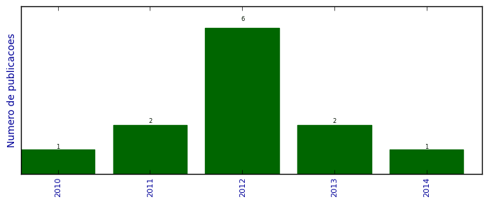

UFSM - Análise do Lattes
Trabalhos completos publicados em anais de congressos

Número total de itens: 12
(A1: 1, A2: 0, B1: 0, B2: 0, B3: 0, B4: 5, B5: 0, C: 0, Qualis não identificado: 6)
Legenda Qualis:
- Publicação para a qual o nome exato do Qualis foi identificado: Qualis <estrato>
- Publicação para a qual um nome similar (não exato) do Qualis foi identificado: Qualis <estrato> (nome similar)
- Publicação para a qual nenhum nome do Qualis foi identificado: Qualis não identificado (nome usado na busca)
2014
| 1. | MACHADO, C. C. ; MOZZAQUATRO, B. A. ; STEFANELLO, A. L. ; SARTURI, T. R. ; SULZBACH, M.. Desvendando RingPaxos: Um protocolo para alta taxa de transferência de dados e difusão atômica em sistemas distribuídos. Em: Computer on The Beach, v. 4, 2014. [ citações Google Scholar | citações Microsoft Acadêmico | busca Google ] Qualis: Não identificado (Computer on The Beach) |
2013
| 1. | CAPPO, C. ; MOZZAQUATRO, B. A. ; NUNES, R. C. ; KOZAKEVICIUS, A. J. ; SCHAERER, C.. O Uso da Transformada de Haar na Detecção de Anomalias no Tráfego Web. Em: XIII Simpósio Brasileiro em Segurança da Informação e de Sistemas Computacionais, v. 1, p. 1-14, 2013. [ citações Google Scholar | citações Microsoft Acadêmico | busca Google ] Qualis: B4 (Simpósio de Segurança da Informação e Sistemas Computacionais) |
| 2. | MOZZAQUATRO, B. A. ; MACHADO, C. C. ; LUCCA, M. R. B.. COFFEE: Controlador OpenFlow de Fluxo para Escoamento Eficiente de Streaming de Vídeo. Em: Simpósio em Informática da UNIFRA - SIRC, p. 20-25, 2013. [ citações Google Scholar | citações Microsoft Acadêmico | busca Google ] Qualis: Não identificado (Simpósio em Informática da UNIFRA - SIRC) |
2012
| 1. | CAPPO, C. ; SCHAERER, C. ; KOZAKEVICIUS, A. J. ; NUNES, R. C. ; MOZZAQUATRO, B. A.. Comparison of Different Threshold Values For a Wavelet Designed Attack Sensor. Em: Congresso Nacional de Matemática Aplicada e Computacional, v. 1, p. 1-7, 2012. [ citações Google Scholar | citações Microsoft Acadêmico | busca Google ] Qualis: B4 |
| 2. | De Azevedo, Renato Preigschadt ; MOZZAQUATRO, BRUNO ; KOZAKEVICIUS, ALICE ; NUNES, RAUL CERETTA ; Cappo, Cristian ; Schaerer, Christian. DoS attack detection using a two dimensional wavelet transform. Em: 2012 XXXVIII Conferencia Latinoamericana En Informatica (CLEI), v. 1, 2012.  [ citações Google Scholar | citações Microsoft Acadêmico | busca Google ] Qualis: B4 (CLEI) |
| 3. | FREITAS, L. ; LIBRELOTTO, G. R. ; PEREIRA, H. ; KASPER, J. ; MARTINI, R. G. ; MOZZAQUATRO, B. A. ; PEREIRA, R. T.. Applying Pervasive Computing in an Architecture for Homecare Environments. Em: IEEE 9th International Conference on Ubiquitous Computing and Intelligence/IEEE 9th International Conference on Autonomic and Trusted Computing, 2012. [ citações Google Scholar | citações Microsoft Acadêmico | busca Google ] Qualis: A1 (International Conference on Ubiquitous Computing) |
| 4. | FREITAS, L. ; PEREIRA, R. T. ; PEREIRA, H. ; MARTINI, R. G. ; MOZZAQUATRO, BRUNO ; KASPER, J. ; LIBRELOTTO, G. R.. A Methodology for an Architecture of Pervasive Systems to Homecare Environments. Em: 4th Conference of ENTERprise Information Systems aligning technology, v. 5, p. 820-829, 2012. [ citações Google Scholar | citações Microsoft Acadêmico | busca Google ] Qualis: Não identificado (4th Conference of ENTERprise Information Systems aligning technology) |
| 5. | MARTINI, RICARDO GIULIANI ; LIBRELOTTO, GIOVANI RUBERT ; De Azevedo, Renato Preigschadt ; FIORIN, ANDRE ; KASPER, JEFERSON ; Mozzaquatro, Bruno Augusti ; PEREIRA, RAFAEL. An approach to automatic customization of user interfaces for mobile devices in pervasive environments. Em: 2012 XXXVIII Conferencia Latinoamericana En Informatica (CLEI), v. 1, p. 1-7, 2012. [ citações Google Scholar | citações Microsoft Acadêmico | busca Google ] Qualis: B4 (CLEI) |
| 6. | MOZZAQUATRO, B. A. ; GUBIANI, J. S. ; PEREIRA, H. ; CARLI, D. M. ; CORREA, B. B. ; POSSATTI, A. ; COLUSSO, G.. Comparativo entre Serviços usando a API Geolocation integrado ao HTML5. Em: Encontro Anual de Tecnologia da Informação (EATI), p. 1-8, 2012. [ citações Google Scholar | citações Microsoft Acadêmico | busca Google ] Qualis: Não identificado (Encontro Anual de Tecnologia da Informação (EATI)) |
2011
| 1. | LIBRELOTTO, G. R. ; FREITAS, L. ; FIORIN, A ; MOZZAQUATRO, B. A. ; PASETTO, L. ; MARTINI, R. G. ; AZEVEDO, R. P. ; PEREIRA, R. T.. OntoHealth: A System to Process Ontologies Applied to Health Pervasive Environment. Em: 4th International Conference on Ubi-media Computing (U-Media 2011), v. 1, p. 59-64, 2011. [ citações Google Scholar | citações Microsoft Acadêmico | busca Google ] Qualis: Não identificado (4th International Conference on Ubi-media Computing (U-Media 2011)) |
| 2. | MOZZAQUATRO, B. A. ; AZEVEDO, R. P. ; NUNES, R. C. ; KOZAKEVICIUS, A. J. ; CAPPO, C. ; SCHAERER, C.. Detecção de Ataques Web usando Técnicas de Detecção de Anomalias. Em: Escola Regional de Redes de Computadores, v. 9, p. 101-104, 2011. [ citações Google Scholar | citações Microsoft Acadêmico | busca Google ] Qualis: Não identificado (Escola Regional de Redes de Computadores) |
2010
| 1. | MACEDO, R. T. ; MOZZAQUATRO, B. A. ; BIAZUS, L. ; NUNES, R. C.. Arquitetura de Segurança para Mecanismos de Controle de Acesso Baseados em Serviços Web. Em: Simpósio Brasileiro em Segurança da Informação e de Sistemas Computacionais (SBSeg), 2010. [ citações Google Scholar | citações Microsoft Acadêmico | busca Google ] Qualis: B4 (Simpósio de Segurança da Informação e Sistemas Computacionais) |
(*) Relatório criado com produções desde 1999 até HOJE
Data de processamento: 02/04/2014 18:51:09